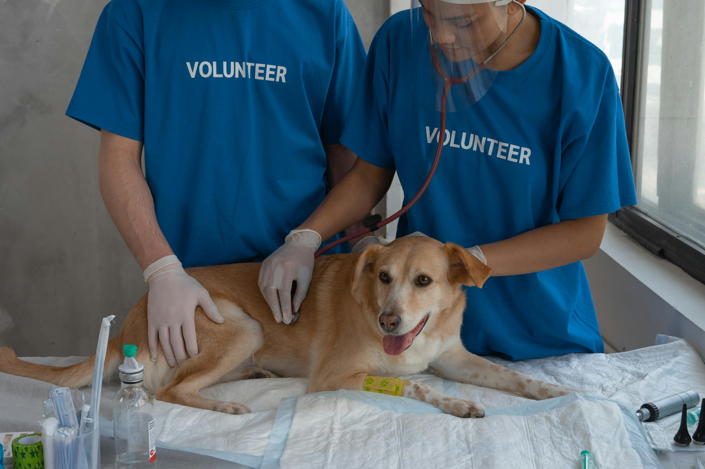
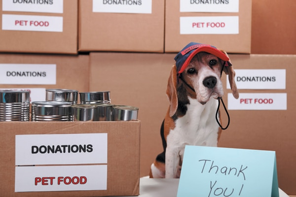

Make a Difference Today
There are many ways you can help us continue our life-saving work.
Become a Volunteer
Join our team of dedicated volunteers! Help with:
- Animal care and socialization
- Event organization and fundraising
- Transportation and administrative tasks
- Facility maintenance and cleaning
Open Your Home as a Foster

Fostering saves lives! We provide all supplies and medical care,you just provide the love and temporary home.
Foster homes are especially needed for:
- Kittens and puppies
- Animals recovering from surgery
- Pets needing extra behavioural training
- Senior animals requiring special care
Support Our Mission
Your financial support helps us provide:
- Veterinary care and vaccinations
- Food and supplies
- Shelter maintenance and improvements
- Emergency medical treatments